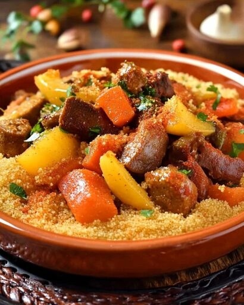

Le Couscous Royal est un plat traditionnel du restaurant Le Fiasco, préparé avec du couscous de qualité supérieure, accompagné de viandes et de légumes savoureux. Il est assaisonné avec des épices locales et servis avec une sauce crémeuse au beurre.
Ingrédients : |
Plat |
|---|---|
|
 |